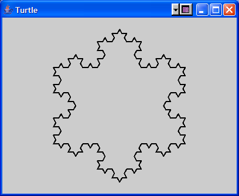
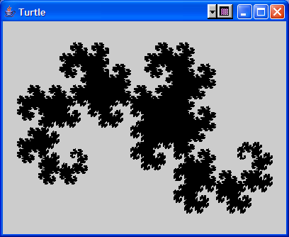

Maintained by Brian Howard (
bhoward@depauw.edu).
Last updated
| Overview | Schedule | Resources | Assignments | Home |
You are to write a program that generates fractals using
what are known as Lindenmayer systems, or L-systems. The concept
of an L-system was introduced in the 1960's by Aristid Lindenmayer
as a simple model of the growth of plants. It is based on the idea
of a formal grammar, as used by linguists to analyze the
structure of natural languages (and by computer scientists to specify
the structure of programming languages). For more details on
the theory behind L-systems, consult
http://en.wikipedia.org/wiki/L-system.
The best way to understand the version of L-system we will be using is to consider a simple example (this is essentially Lindenmayer's original model for the growth of algae, although we will cast it in more familiar terms). Let the symbol B represent a baby bunny, and let the symbol A stand for an adult rabbit. If we assume that an adult rabbit produces one baby bunny each month, and that it takes a baby one month to mature into an adult, then we could model the growth of a population of rabbits with the following rules:
The arrow (-->) is read as "produces" or "develops into" (after one month), so the first rule says that an adult rabbit develops into an adult (itself) and a baby after one month, while a baby bunny develops into an adult after one month. We are also assuming that these (idealized) rabbits are immortal; as you can see in the interpretation of the rules, each rabbit present in one month will continue into the next (accompanied by an ever-increasing crowd of relatives...).
In addition to a set of symbols and a list of rules, an L-system needs a starting point, known as the "axiom". For our rabbits, suppose we start with a single baby bunny, B, as our axiom. Given a starting point, an L-system develops in a series of stages (months, in our case). At each stage, every member in the current population (represented as a string of symbols) is replaced by the right-hand-side of the rule for that symbol; if there is no rule for a given symbol, it remains unchanged. For example, here are the first few stages of the growth of our rabbit population:
| Month | Population |
| 0 | B |
| 1 | A |
| 2 | AB |
| 3 | ABA |
| 4 | ABAAB |
| 5 | ABAABABA |
| 6 | ABAABABAABAAB |
Looking at the size of the rabbit population in each month reveals a familiar sequence: 1, 1, 2, 3, 5, 8, 13, .... Indeed, we have reproduced the original model of rabbit population growth studied by Leonardo of Pisa (son of Bonacci, hence "Fibonacci") about 800 years ago, although of course he didn't phrase it in terms of L-systems.
To summarize, an L-system is specified by giving a list of rules describing how the symbols develop in each stage, plus an axiom which serves as the starting string of symbols. We will only consider deterministic L-systems, where there is at most one rule for each symbol, although the generalization to stochastic L-systems (where one of several rules is chosen at random for each symbol) is also very interesting.
To use an L-system to generate fractals, we will apply a graphical
interpretation to some of the generated symbols. The graphics will be in
the form of commands to a "turtle" -- an imaginary animal that crawls
around leaving trails on the screen. Our turtle will be provided by the
Turtle class, which has the following methods:
You will need to write a function called interpret that
takes a sequence of symbols (as generated by running the L-system to a given
stage) and gives the appropriate sequence of commands to the turtle. You
should follow the conventions of the program FRACTINT
(http://spanky.triumf.ca/www/fractint/fractint.html)
which interprets F as drawForward, G as
moveForward, + as right, - as
left, | as reverse, ! as reflect,
[ as push, and ] as pop; any other character is ignored.
For example, if the sequence of symbols were stored in a String, you could write the following:
public void interpret(String sequence, delta)
{
Turtle t = new Turtle();
t.setDelta(delta);
t.init();
for (int i = 0; i < sequence.length(); i++) {
switch(sequence.charAt(i)) {
case 'F':
t.drawForward();
break;
case 'G':
t.moveForward();
break;
case '+':
t.right();
break;
case '-':
t.left();
break;
case '|':
t.reverse();
break;
case '!':
t.reflect();
break;
case '[':
t.push();
break;
case ']':
t.pop();
break;
default:
// Do nothing
break;
}
}
t.display();
}
Given this function, calling interpret("F-F++F-F", 60)
results in the following display:
This is the first stage of part of the Koch snowflake curve. The entire curve may be generated using the axiom F++F++F and the single rule F --> F-F++F-F; here is the result of applying this rule for 3 stages:
As a final example, the axiom FX together with the rules F --> (nothing), X --> -FX++FY-, and Y --> +FX--FY+ produce the "dragon curve". Here it is, generated to 15 stages (resulting in about 200,000 symbols) and interpreted with an angle of 45 degrees:
Of course, since this project deals with linked lists, you won't have the sequence of symbols stored in a String, so you can't use the above version of interpret without modification. Why don't we want to use a String? Because many L-systems produce sequences that grow exponentially in the number of stages, so we may well be generating sequences of millions of symbols. Although it isn't a problem just to store millions of characters in a Java String, it is a problem to replace one of those characters by the several that might take its place when generating the next stage of a sequence -- besides the fact that Java String objects are immutable, so you have to make a copy of the entire String to change any part of it, there is the simple problem for any data structure using contiguous storage that to insert several things in place of one you have to shift everything else to make room! These problems are solved if we switch to a linked-list representation of the sequence of symbols: it is an easy matter to splice in a replacement set of nodes each time a symbol needs to be substituted by the right-hand-side of its corresponding rule.
Input file format: The input to the program will be a text file giving the following information on successive lines:
All of the symbols used in rules will be from the ASCII character set, so you can rely on their code values being less than 128 (in case you want to use them as array indices, for example).
For example, here is a file describing the dragon curve shown above
(this is the file dragon.txt in the folder
I:\CSC122\public\LSystem):
FX
3
F
X
-FX++FY-
Y
+FX--FY+
15
45
You should use the Infile class from the previous
projects to read the lines of the file. To convert a string s to an
int, use the static method Integer.parseInt(s); there
are similar methods for the other primitive types (for example,
Float.parseFloat(s)).
The LSystem project:
Standards:
Your project should be well-written, neatly-formatted, modular, and well-documented.
Grading:
| Overview | Schedule | Resources | Assignments | Home |

 DePauw University,
Computer Science Department,
Fall 2006
DePauw University,
Computer Science Department,
Fall 2006
Maintained by Brian Howard
(bhoward@depauw.edu).
Last updated